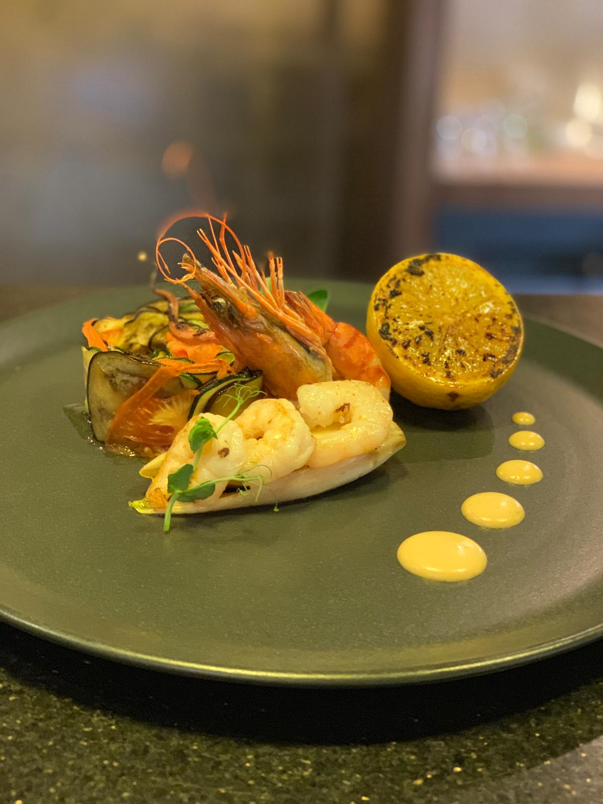

Berufserfahrung
In diesem Abschnitt werde ich meine verschiedenen Jobs, frühere und aktuelle, vorstellen, in denen ich im Laufe der Jahre umfangreiche Erfahrungen im Bereich Gastronomie gesammelt habe.
Neben diesen habe ich auch an verschiedenen Seminaren und Kongressen im Bereich Gastronomie teilgenommen.
Ich habe auch verschiedene Bücher von berühmten Köchen gelesen, von denen ich oft inspiriert wurde. Zu diesen Köchen gehören Raymond Blanc, der mein Vorbild in diesem Bereich ist,
Tom Kerridge und Massimo Bottura.
Neben dem Lesen ihrer Bücher hatte ich auch die Gelegenheit, in den Restaurants einiger von ihnen zu kochen oder zu essen.
Ich hatte die Gelegenheit, die Küche von Raymond Blanc zu besuchen und darin zu kochen, und habe im Restaurant von Tom Kerridge zu Mittag gegessen.
Ich werde nun meine Berufserfahrung vorstellen:

Koch, November 2019 - heute, Restaurant "Kafi Pfyfouter", Bern, Schweiz
- Planung und Entwicklung von Menüs unter Berücksichtigung der Saison, verfügbarer Zutaten und Kundenpräferenzen.
- Erstellung und Erprobung neuer Rezepte, Anpassung an aktuelle gastronomische Trends.
- Überwachung des gesamten Kochprozesses, um sicherzustellen, dass die Gerichte gemäß Qualitäts- und Zeitstandard zubereitet werden.
- Organisation und Management des gesamten Küchenpersonals, einschließlich Köche und Helfer.
- Koordination von Aufgaben und Delegierung von Verantwortlichkeiten an Teammitglieder, um einen reibungslosen Ablauf der Küche zu gewährleisten.
- Strikte Kontrolle über Lebensmittelvorräte und Beschaffung hochwertiger Zutaten.
- Überwachung der Vorbereitung, des Kochens und der Präsentation, um Konsistenz und Qualität der Gerichte sicherzustellen.
- Entwicklung und Implementierung von Hygiene- und Lebensmittelsicherheitsstandards in der Küche unter Einhaltung gesundheitlicher Vorschriften.
- Überwachung der Ästhetik der Präsentation von Speisen, um sicherzustellen, dass jedes Gericht ansprechend und schmackhaft serviert wird.
- Zusammenarbeit mit dem Servicepersonal, um Bedürfnisse und Vorlieben zu entwickeln und maßgeschneiderte Optionen anzubieten.
- Effektives Kosten- und Budgetmanagement für Zutaten und Geräteanwendung.
- Wartung von Küchengeräten und Arbeitsbereich, um sicherzustellen, dass alle Geräte zusammenarbeiten.
- Schulung und laufende Schulung neuer oder bestehender Mitarbeiter in Koch-, Hygiene- und Servicetechniken.
- Fähigkeit, ruhig und effizient in stressigen oder arbeitsintensiven Situationen zu bleiben.
- Teilnahme an besonderen Veranstaltungen oder Zubereitung von Mahlzeiten für private Veranstaltungen.
- Aufrechterhaltung der Leidenschaft für die Küche und Erkundung neuer Techniken und Trends, um das Maß an Exzellenz in der Küche zu erhalten.

Koch, April 2019 - Oktober 2019, Restaurant "Villa Giosi", Lago di Tenno, Italien
- Planung und Entwicklung von Menüs unter Berücksichtigung der Saison, verfügbarer Zutaten und Kundenpräferenzen.
- Erstellung und Erprobung neuer Rezepte, Anpassung an aktuelle gastronomische Trends.
- Überwachung des gesamten Kochprozesses, um sicherzustellen, dass die Gerichte gemäß Qualitäts- und Zeitstandard zubereitet werden.
- Organisation und Management des gesamten Küchenpersonals, einschließlich Köche und Helfer.
- Koordination von Aufgaben und Delegierung von Verantwortlichkeiten an Teammitglieder, um einen reibungslosen Ablauf der Küche zu gewährleisten.
- Strikte Kontrolle über Lebensmittelvorräte und Beschaffung hochwertiger Zutaten.
- Überwachung der Vorbereitung, des Kochens und der Präsentation, um Konsistenz und Qualität der Gerichte sicherzustellen.
- Entwicklung und Implementierung von Hygiene- und Lebensmittelsicherheitsstandards in der Küche, unter Einhaltung gesundheitlicher Vorschriften.
- Überwachung der Ästhetik der Präsentation von Speisen, um sicherzustellen, dass jedes Gericht ansprechend und schmackhaft serviert wird.
- Zusammenarbeit mit dem Servicepersonal, um Bedürfnisse und Vorlieben zu entwickeln und maßgeschneiderte Optionen anzubieten.
- Effektives Kosten- und Budgetmanagement für Zutaten und Geräteanwendung.
- Wartung von Küchengeräten und Arbeitsbereich, um sicherzustellen, dass alle Geräte zusammenarbeiten.
- Schulung und laufende Schulung neuer oder bestehender Mitarbeiter in Koch-, Hygiene- und Servicetechniken.
- Fähigkeit, ruhig und effizient in stressigen oder arbeitsintensiven Situationen zu bleiben.
- Teilnahme an besonderen Veranstaltungen oder Zubereitung von Mahlzeiten für private Veranstaltungen.
- Aufrechterhaltung der Leidenschaft für die Küche und Erkundung neuer Techniken und Trends, um das Maß an Exzellenz in der Küche aufrechtzuerhalten.

Executive Sous-Chef, 2019, Schloss Cantacusino, Busteni, Rumänien
- Enge Zusammenarbeit mit dem Chefkoch bei der Menüplanung und -entwicklung sowie bei der operativen Leitung der Küche.
- Überwachung des Kochprozesses und Sicherstellung, dass alle Gerichte gemäß Qualitäts- und Zeitstandards zubereitet werden.
- Koordination und Überwachung des Küchenteams, um sicherzustellen, dass Teammitglieder zugewiesene Aufgaben erledigen.
- Aktive Beteiligung an der Erstellung und Erprobung neuer Rezepte, die an die Kundenanforderungen und aktuellen Gastronomietrends angepasst sind.
- Organisation der Zutatenzubereitung, des Kochens und der Präsentation, um Einheitlichkeit und Konsistenz in der Küche sicherzustellen.
- Wahrung eines hohen Standards für Lebensmittelhygiene und -sicherheit gemäß den Gesundheitsvorschriften.
- Delegierung von Aufgaben und Schulung des Personals in Kochtechniken, Sicherheit und Hygiene.
- Überwachung der Lebensmittelvorräte und Beschaffung hochwertiger Zutaten in Zusammenarbeit mit dem Chefkoch und dem Beschaffungsteam.
- Direkte Koordination mit dem Servicepersonal, um effizienten Service und eine angenehme Kundenerfahrung sicherzustellen.
- Aktive Beteiligung an der Entwicklung und Implementierung neuer Menüs und kulinarischer Konzepte.
- Verwaltung von Kosten und zugewiesenem Budget für Vorräte und Ausrüstung in Zusammenarbeit mit der Geschäftsleitung.
- Überwachung und Wartung von Küchenausrüstung und Arbeitsbereich.
- Durchführung administrativer Aufgaben wie Erstellung von Tätigkeitsberichten, Personalplanung und Arbeitszeitplanung.
- Sicherstellung einer effektiven Kommunikation zwischen den verschiedenen Abteilungen in der Küche und im Restaurant.
- Beteiligung an der laufenden Schulung und Weiterentwicklung des Personals, einschließlich Schulungen in neuen Kochtechniken.
- Fähigkeit, im Falle der Abwesenheit des Chefkochs die Verantwortung zu übernehmen und den täglichen Betrieb zu koordinieren.
- Aufrechterhaltung eines positiven und kooperativen Arbeitsumfelds in der Küche.
Koch, Juni 2018 - August 2018, Restaurant "IDracula", Bukarest, Rumänien
- Planung und Entwicklung von Menüs unter Berücksichtigung der Saison, verfügbarer Zutaten und Kundenpräferenzen.
- Erstellung und Erprobung neuer Rezepte, Anpassung an aktuelle gastronomische Trends.
- Überwachung des gesamten Kochprozesses, um sicherzustellen, dass die Gerichte gemäß Qualitäts- und Zeitstandard zubereitet werden.
- Organisation und Management des gesamten Küchenpersonals, einschließlich Köche und Helfer.
- Koordination von Aufgaben und Delegierung von Verantwortlichkeiten an Teammitglieder, um einen reibungslosen Ablauf der Küche zu gewährleisten.
- Strikte Kontrolle über Lebensmittelvorräte und Beschaffung hochwertiger Zutaten.
- Überwachung der Vorbereitung, des Kochens und der Präsentation, um Konsistenz und Qualität der Gerichte sicherzustellen.
- Entwicklung und Implementierung von Hygiene- und Lebensmittelsicherheitsstandards in der Küche, unter Einhaltung gesundheitlicher Vorschriften.
- Überwachung der Ästhetik der Präsentation von Speisen, um sicherzustellen, dass jedes Gericht ansprechend und schmackhaft serviert wird.
- Zusammenarbeit mit dem Servicepersonal, um Bedürfnisse und Vorlieben zu entwickeln und maßgeschneiderte Optionen anzubieten.
- Effektives Kosten- und Budgetmanagement für Zutaten und Geräteanwendung.
- Wartung von Küchengeräten und Arbeitsbereich, um sicherzustellen, dass alle Geräte zusammenarbeiten.
- Schulung und laufende Schulung neuer oder bestehender Mitarbeiter in Koch-, Hygiene- und Servicetechniken.
- Fähigkeit, ruhig und effizient in stressigen oder arbeitsintensiven Situationen zu bleiben.
- Teilnahme an besonderen Veranstaltungen oder Zubereitung von Mahlzeiten für private Veranstaltungen.
- Aufrechterhaltung der Leidenschaft für die Küche und Erkundung neuer Techniken und Trends, um das Maß an Exzellenz in der Küche aufrechtzuerhalten.
.jpg)
Koch, April 2017 - Januar 2019, Restaurant "Matrioska", Bukarest, Rumänien
- Planung und Entwicklung von Menüs unter Berücksichtigung der Saison, verfügbarer Zutaten und Kundenpräferenzen.
- Erstellung und Erprobung neuer Rezepte, Anpassung an aktuelle gastronomische Trends.
- Überwachung des gesamten Kochprozesses, um sicherzustellen, dass die Gerichte gemäß Qualitäts- und Zeitstandard zubereitet werden.
- Organisation und Management des gesamten Küchenpersonals, einschließlich Köche und Helfer.
- Koordination von Aufgaben und Delegierung von Verantwortlichkeiten an Teammitglieder, um einen reibungslosen Ablauf der Küche zu gewährleisten.
- Strikte Kontrolle über Lebensmittelvorräte und Beschaffung hochwertiger Zutaten.
- Überwachung der Vorbereitung, des Kochens und der Präsentation, um Konsistenz und Qualität der Gerichte sicherzustellen.
- Entwicklung und Implementierung von Hygiene- und Lebensmittelsicherheitsstandards in der Küche, unter Einhaltung gesundheitlicher Vorschriften.
- Überwachung der Ästhetik der Präsentation von Speisen, um sicherzustellen, dass jedes Gericht ansprechend und schmackhaft serviert wird.
- Zusammenarbeit mit dem Servicepersonal, um Bedürfnisse und Vorlieben zu entwickeln und maßgeschneiderte Optionen anzubieten.
- Effektives Kosten- und Budgetmanagement für Zutaten und Geräteanwendung.
- Wartung von Küchengeräten und Arbeitsbereich, um sicherzustellen, dass alle Geräte zusammenarbeiten.
- Schulung und laufende Schulung neuer oder bestehender Mitarbeiter in Koch-, Hygiene- und Servicetechniken.
- Fähigkeit, ruhig und effizient in stressigen oder arbeitsintensiven Situationen zu bleiben.
- Teilnahme an besonderen Veranstaltungen oder Zubereitung von Mahlzeiten für private Veranstaltungen.
- Aufrechterhaltung der Leidenschaft für die Küche und Erkundung neuer Techniken und Trends, um das Maß an Exzellenz in der Küche aufrechtzuerhalten.

Koch, März 2013 - April 2017, Restaurant "Lacrimi si Sfinti", Bukarest, Rumänien
- Planung und Entwicklung von Menüs unter Berücksichtigung der Saison, verfügbarer Zutaten und Kundenpräferenzen.
- Erstellung und Erprobung neuer Rezepte, Anpassung an aktuelle gastronomische Trends.
- Überwachung des gesamten Kochprozesses, um sicherzustellen, dass die Gerichte gemäß Qualitäts- und Zeitstandard zubereitet werden.
- Organisation und Management des gesamten Küchenpersonals, einschließlich Köche und Helfer.
- Koordination von Aufgaben und Delegierung von Verantwortlichkeiten an Teammitglieder, um einen reibungslosen Ablauf der Küche zu gewährleisten.
- Strikte Kontrolle über Lebensmittelvorräte und Beschaffung hochwertiger Zutaten.
- Überwachung der Vorbereitung, des Kochens und der Präsentation, um Konsistenz und Qualität der Gerichte sicherzustellen.
- Entwicklung und Implementierung von Hygiene- und Lebensmittelsicherheitsstandards in der Küche, unter Einhaltung gesundheitlicher Vorschriften.
- Überwachung der Ästhetik der Präsentation von Speisen, um sicherzustellen, dass jedes Gericht ansprechend und schmackhaft serviert wird.
- Zusammenarbeit mit dem Servicepersonal, um Bedürfnisse und Vorlieben zu entwickeln und maßgeschneiderte Optionen anzubieten.
- Effektives Kosten- und Budgetmanagement für Zutaten und Geräteanwendung.
- Wartung von Küchengeräten und Arbeitsbereich, um sicherzustellen, dass alle Geräte zusammenarbeiten.
- Schulung und laufende Schulung neuer oder bestehender Mitarbeiter in Koch-, Hygiene- und Servicetechniken.
- Fähigkeit, ruhig und effizient in stressigen oder arbeitsintensiven Situationen zu bleiben.
- Teilnahme an besonderen Veranstaltungen oder Zubereitung von Mahlzeiten für private Veranstaltungen.
- Aufrechterhaltung der Leidenschaft für die Küche und Erkundung neuer Techniken und Trends, um das Maß an Exzellenz in der Küche aufrechtzuerhalten.

Italienischer Pizzaiollo, September 2011 - Februar 2013, Bukarest, Rumänien
- Vorbereitung des Pizzateigs, einschließlich Kneten, Ausrollen und ordnungsgemäße Krustenbildung.
- Auftragen und gleichmäßige Verteilung von Zutaten wie Tomatensauce, Käse, Gemüse und Fleisch.
- Geschickter Betrieb des Pizzaofens und anderer notwendiger Ausrüstung.
- Kochen und Überwachen der Pizza im Ofen, um gleichmäßiges Backen und hochwertige Ergebnisse zu gewährleisten.
- Entwicklung und Testen neuer Kombinationen von Pizzazutaten und Experimentieren mit neuen Geschmacksrichtungen.
- Verwaltung von Kundenbestellungen und Sicherstellen, dass die Pizza in optimaler Zeit zubereitet wird.
- Einhaltung von Hygiene- und Lebensmittelsicherheitsstandards in der Küche.
- Behalten und Organisieren des Bestands an Zutaten, einschließlich grundlegender Pizzazutaten.
- Sicherstellen, dass alle Pizzen schön präsentiert und appetitlich serviert werden.
- Aufrechterhaltung der Sauberkeit im Arbeitsbereich und der verwendeten Ausrüstung.
- Zusammenarbeit mit dem Servicepersonal, um eine rechtzeitige Lieferung von Bestellungen und frischer Pizza sicherzustellen.
- Fähigkeit, die Arbeitsbelastung zu bewältigen und die Qualität zu Stoßzeiten aufrechtzuerhalten.
- Zusammenarbeit mit Teamkollegen und Küchenpersonal, um eine effektive Kommunikation aufrechtzuerhalten.
- Verständnis und Befolgung von Sicherheitsregeln bei der Arbeit, einschließlich solcher, die sich auf Geräte und Utensilien beziehen.
- Fähigkeit, unter Druck zu arbeiten und in einer schnelllebigen Umgebung ein gleichmäßiges Arbeitstempo aufrechtzuerhalten.
- Teilnahme an laufender Schulung und Weiterentwicklung in neuen und verbesserten Techniken.
- Aufrechterhaltung von Qualitätsstandards und Präsentation der Pizza, um die Erwartungen der Kunden zu erfüllen.

Bäcker, Konditor, November 2006 - Mai 2011, Panificio Bruno Dorigati, Ala, Italien
- Vorbereitung von Teig für verschiedene Brot-, Gebäck- und Konditoreiprodukte.
- Mischen, Kneten und Formen von Teig nach spezifischen Rezepten und Techniken.
- Backen von Brot und Gebäck in spezialisierten Öfen und Geräten, um sicherzustellen, dass sie ordnungsgemäß gegart werden.
- Erstellen und Zubereiten von Backwaren wie Kuchen, Kekse, Eclairs, Macarons und anderen Desserts.
- Künstlerische Dekoration und Präsentation von Konditoreiprodukten unter Verwendung von Glasuren, Verzierungen und anderen Zutaten.
- Entwicklung neuer und innovativer Rezepte, um Kundenwünschen und -erwartungen gerecht zu werden.
- Verwaltung und Organisation von Zutatenvorräten, einschließlich Grundzutaten und Backmaterialien.
- Sicherstellung der Einhaltung von Hygiene- und Lebensmittelsicherheitsstandards in allen Phasen des Zubereitungsprozesses.
- Aufrechterhaltung der Sauberkeit im Arbeitsbereich und der verwendeten Utensilien sowie der Konditoreigeräte.
- Zusammenarbeit mit Teamkollegen, um eine effektive Kommunikation und angemessene Koordination sicherzustellen.
- Fähigkeit, spezielle Geräte wie Mischmaschinen, Konvektionsofen und andere Konditoreiwerkzeuge zu bedienen.
- Zusammenarbeit mit dem Servicepersonal, um die korrekte Präsentation und Lieferung von Backwaren an die Kunden sicherzustellen.
- Aufrechterhaltung von Qualitätsstandards, um frische und köstliche Backwaren für die Kunden bereitzustellen.
- Ständiges Lernen und Verbessern von Back- und Konditoreitechniken, um auf dem neuesten Stand der Branchentrends zu bleiben.
- Erstellen und Verwalten des Arbeitszeitplans unter Berücksichtigung der spezifischen Anforderungen des Unternehmens.
- Fähigkeit, Rezepte basierend auf Ernährungsanforderungen oder Kundenpräferenzen anzupassen.
- Überwachung der Herstellungskosten und effektive Verwaltung der Zutaten, um die Rentabilität aufrechtzuerhalten.

Konditor, August 2006 - November 2006, Pasticeria Dall'Omo, Verona, Italien
- Erlernen der grundlegenden Techniken der Teigzubereitung für verschiedene Arten von Gebäck.
- Unterstützung im Backprozess von Brot und Gebäck unter Aufsicht eines erfahrenen Bäckers.
- Vorbereitung und Messen der für die gegebenen Rezepte benötigten Zutaten.
- Zusammenstellen und Verpacken der fertigen Produkte unter Beachtung der Regeln für Präsentation und Erscheinungsbild.
- Dekorieren von Gebäck unter Anleitung und Aufsicht des Bäckers oder des leitenden Konditors.
- Reinigung und Aufrechterhaltung der Sauberkeit im Arbeitsbereich und der verwendeten Utensilien.
- Einhaltung von Hygiene- und Lebensmittelsicherheitsstandards in allen Bereichen der Tätigkeit.
- Erlernen der Verwendung von Konditoreigeräten und -werkzeugen.
- Teilnahme an der Vorbereitung von Zutaten und der Vorbereitung von Rezepten.
- Beobachten und Erlernen von Techniken zur Zubereitung, zum Backen und zur Präsentation von Konditoreiprodukten.
- Sicherstellen, dass alle Produkte den etablierten Qualitäts- und Erscheinungsstandards entsprechen.
- Zusammenarbeit mit Teamkollegen, um eine effektive Koordination sicherzustellen und von anderen Teammitgliedern zu lernen.
- Durchführen von administrativen oder Reinigungsaufgaben, wie vom Standort gefordert.
- Entwicklung von Fähigkeiten in der künstlerischen Präsentation von Gebäck und Desserts.
- Erlernen und Perfektionieren spezifischer Back- und Konditoreitechniken.
- Teilnahme an Schulungen und Workshops, um neue Techniken und Fähigkeiten im Bereich zu erlernen.
- Zeigen von Liebe zum Detail und Leidenschaft für die Kunst der Konditorei.
- Einhaltung der Arbeitszeiten und der vom Arbeitgeber festgelegten Verfügbarkeitsanforderungen.

Koch, Mai 2004 - April 2006, Restaurant "La Radu", Bukarest, Rumänien
- Erlernen grundlegender Zubereitungstechniken wie Schneiden, Reinigen und Kochen von Lebensmitteln.
- Teilnahme an der Zubereitung von Zutaten für verschiedene Rezepte unter Aufsicht erfahrenerer Köche.
- Zusammenstellen und Anordnen von Zutaten für verschiedene Gerichte unter Anleitung des Chefkochs.
- Vorbereitung von Utensilien und Arbeitsbereich vor Beginn der Kochaktivitäten.
- Einhaltung von Hygiene- und Lebensmittelsicherheitsstandards in allen Arbeitsphasen.
- Erlernen der Verwendung und Wartung von Küchengeräten.
- Teilnahme am Kochprozess zur Zubereitung verschiedener Gerichte.
- Beobachten und Erlernen von Koch- und Lebensmittelpräsentationstechniken.
- Reinigen und Aufrechterhalten der Sauberkeit im Küchenbereich und bei den Utensilien.
- Teilnahme an der Lagerung und Organisation von Zutaten und Inventar.
- Zusammenarbeit mit Kollegen, um eine effektive Koordination in der Küche sicherzustellen.
- Durchführen von administrativen oder Reinigungsaufgaben, wie von der Küche gefordert.
- Entwicklung von Fähigkeiten in der künstlerischen Präsentation von Gerichten.
- Erlernen und Perfektionieren spezifischer Kochtechniken.
- Teilnahme an Anweisungen und Schulungen, um neue Techniken und Fähigkeiten in der Küche zu erlernen.
- Zeigen von Liebe zum Detail und Leidenschaft für das Kochen.
- Einhaltung des spezifischen Arbeitszeitplans und der Verfügbarkeitsanforderungen des Arbeitgebers.